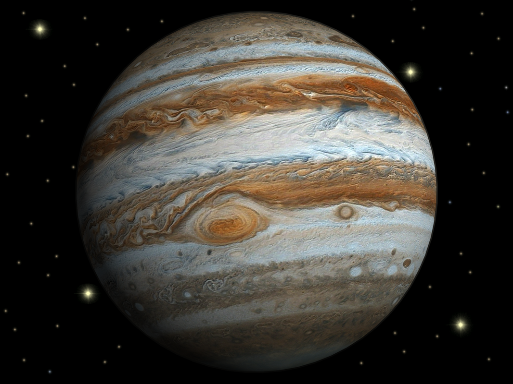
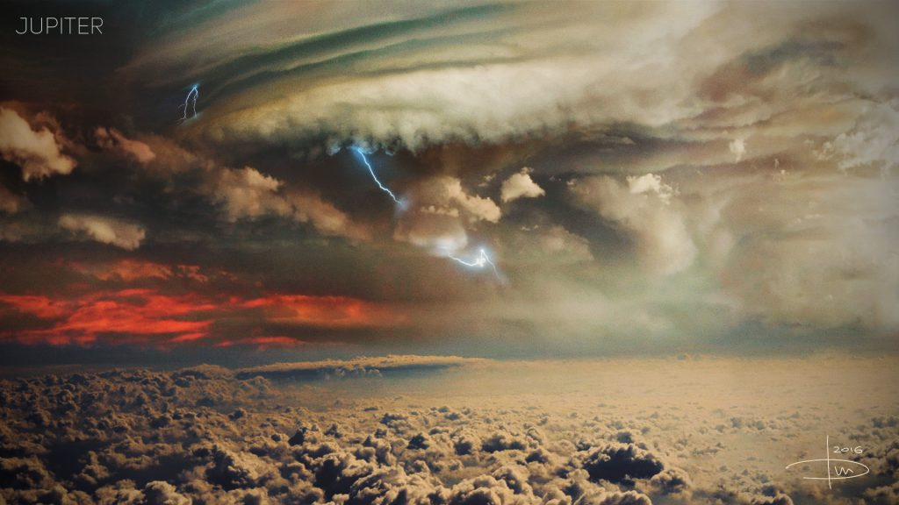
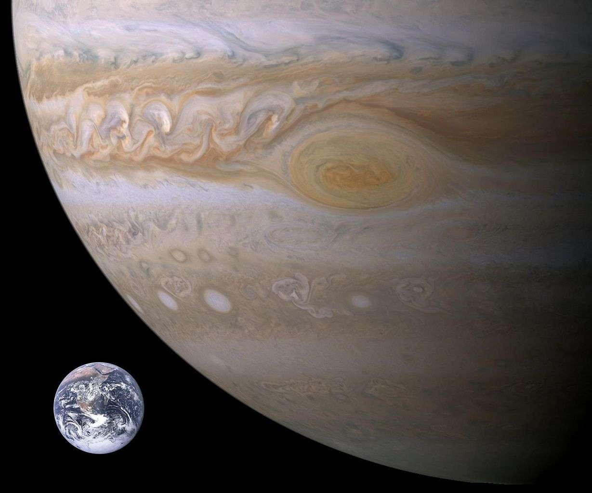

Jupiter est une planète géante gazeusea. Il s'agit de la plus grosse planète du Système solaire, plus volumineuse et massive que toutes les autres planètes réunies, et la cinquième planète par sa distance au Soleil (après Mercure, Vénus, la Terre et Mars).
Visible à l'œil nu dans le ciel nocturne, Jupiter est habituellement le quatrième objet le plus brillant de la voûte céleste, après le Soleil, la Lune et Vénus6. Parfois, Mars apparaît plus lumineuse que Jupiter et, de temps en temps, Jupiter apparaît plus lumineuse que Vénus7. Jupiter était au périhélie le et à l'aphélie le .
Comme sur les autres planètes gazeuses, des vents violents, de près de 600 km/h, parcourent les couches supérieures de la planète. La Grande Tache rouge est un anticyclone, une zone de surpression observée depuis au moins le xviie siècle. Trois fois plus grande que la Terre au début du xxe siècle, elle a rétréci pour devenir de taille comparable un siècle plus tard.
Regroupant Jupiter et les objets se trouvant dans sa sphère d'influence, le système jovien est une composante majeure du Système solaire externe. Il comprend notamment les nombreuses lunes de Jupiter dont les quatre lunes galiléennes , Europe, Ganymède et Callisto, observées pour la première fois en par Galilée au moyen d'une lunette astronomique de son invention, sont les premiers objets découverts par l'astronomie télescopique. Il comprend aussi les anneaux de Jupiter, un système d'anneaux planétaires observés pour la première fois, en , par la sonde spatiale américaine Voyager. ici.
Photo de Jupiter prise par un satellite

caractéristique
La haute atmosphère de Jupiter est composée à 93 % d'hydrogène et 7 % d'hélium en nombre d'atomes, ou à 86 % de dihydrogène et 13 % d'hélium en nombre de molécules. En masse, l'atmosphère est approximativement constituée de 75 % d'hydrogène et de 24 % d'hélium, le pourcentage restant étant apporté par divers autres éléments et composés chimiques (traces de méthane, de vapeur d'eau, d'ammoniac, très petites quantités de carbone, d'éthane, de sulfure d'hydrogène, de néon, d'oxygène, d'hydrure de phosphore et de soufre). La couche la plus externe de la haute atmosphère contient des cristaux d'ammoniac.
Photo de la surface de Jupiter

Composition de l'atmosphère de Juiter
Élément ou molécule
Pourcentage dans l'atmosphère
Dihydrogène
~86 %
Hélium
~13 %
Méthane
0,1 %
Vapeur d'eau
0,1 %
Ammoniac
0,02 %
Éthane
0,0002 %
Phosphine
0,0001 %
Comparaison avec la Terre
Jupiter est deux fois plus massive que toutes les autres planètes du système solaire réunies : Jupiter est de loin la plus grande de nos voisines. Avec son histoire tumultueuse et ses impressionnants cyclones, l’astre fascine beaucoup de scientifiques. L’étude de ses propriétés et de son environnement peut amener à une comparaison. « Jupiter est comme un petit système solaire », décrit Florent Deleflie, astronome à l’Observatoire de Paris, interrogé par Numerama.
La géante gazeuse peut être comparée à une étoile : elle possède les mêmes ingrédients que ce type d’astre, explique la Nasa, mais sa masse n’a pas été suffisante pour qu’elle s’embrase. « Du point de vue de sa composition, Jupiter est proche d’une étoile », confirme Florent Deleflie. La planète est constituée principalement d’hydrogène et d’hélium, comme le Soleil.
Photo comparative entre Jupiter et la Terre

Comparaison de propriétés physiques de Jupiter et de la Terre
Propriétés physiques
Jupiter
Terre
Masse
1898,6× 1024 kg
5,9736 × 1024 kg
Diametre à l'équateur
142 984 km
12 756 km
Densité
1,32
5,51
Température moyenne(celsius)
-110
15
Periode de rotation
4331 jours
365,26 jours
Distance au soleil
778,6 million de km
149,6 million de km
Récentes découvertes sur la planéte
Jupiter impressionne par ses dimensions et les tempêtes qui ne cessent de faire rage à sa surface. La géante gazeuse est observée par les astronomes depuis l’Antiquité, pourtant, beaucoup d’inconnues subsistent quant à sa nature et à celles de ses lunes..
Douze nouvelles lunes ont été découvertes autour de Jupiter;
Le , les astronomes ont observé un nouvel impact sur le pôle sud, de la taille de l'océan Pacifique;
Il n'y a pas de surface solide sur Jupiter;
Les tempêtes de Jupiter sont très nombreuses et les vents y soufflent jusqu'à plusieurs centaines de km/h;